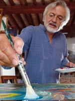

|
- GIULIANO GHELLI -
PITTORE DEL PALIO DEL 16 AGOSTO 2009 |
|
       
Nato a Firenze nel 1944 vive a San Casciano Val di Pesa, nel Chianti Fiorentino. Ha esordito a Milano nel 1963. Nel 1975 e 1980 è “Segnalato Bolaffi”. Dopo la sua prima personale all’estero, Parigi 1974, ha esposto negli U.S.A., Australia, Germania, Belgio, Grecia, Portogallo, Spagna, Giappone, Russia Nel 1992 è al Castello Sforzesco di Milano, “In Viaggio Con Leonardo” personale curata da Carlo Perdetti. Nel 1995 realizza su commissione della Mercedes Benz Italia un ciclo di venti grandi dipinti per la nuova direzione di Roma. Nel 1995 e 96 dipinge il “Premio Maestri del Cinema” di Fiesole, assegnato a Robert Altman, Mario Monicelli e Alberto Sordi. Nel 2000 personale a Sydney in occasione dei Giochi Olimpici. È presente su “L’arte del ‘900” di Lara Vinca Masini Edizioni Giunti - L’Espresso. Nel 2001 ha tenuto presso il Museo Pecci di Prato la personale dal titolo “La Parola Colorata”. Dal 2002 i suoi busti dipinti diventano il “Premio Milano per la Moda”. È stato prescelto dalla Toyota per il calendario ufficiale 2003 in 1.500.000 copie in Giappone. Dal 2002 inizia il percorso con il suo “Esercito di Terracotta” dell’Impruneta a Villa Demidoff e al Convitto della Calza a Firenze, Palazzo Pretorio di Certaldo, Museo Archeologico di Massa Marittima, Teatro Romano di Fiesole, Castello dei Conti Guidi a Poppi, Vecchie Carceri di Radda in Chianti. Nel 2005 Carlo Cambi editore ha pubblicato la sua monografia “Le vie del tempo” curata da Maurizio Vanni. Nel Dicembre 2007 è stata costituita la “FONDAZIONE GIULIANO GHELLI” a Poppi (Arezzo) dove è allestita una sua mostra permanente. Nel febbraio 2008 ha presentato una personale all’Istituto Italiano di Cultura di Tokyo, in contemporanea con il lancio della nuova Fiat 500 per il Giappone realizzando un esemplare unico della vettura con un suo intervento pittorico. Nel maggio 2008 espone il suo Esercito di Terracotta a Palazzo Medici Riccardi a Firenze, nell’ambito del Genio Fiorentino e al Palazzo dell’Abbondanza di Massa Marittima. Realizza l’immagine per il festival internazionale “7 Sois 7 Luas” nell’ambito del quale ha esposto a Oeiras e Castro Verde in Portogallo, Cartaya e Castril in Spagna e Tetuan in Marocco. Nell’Agosto 2008 viene realizzata una personale al Palazzo dell’Abbondanza di Massa Marittima e alle Vecchie Prigioni del Palazzo del Podestà di Radda in Chianti, mentre a Settembre ha esposto alla Filanda di Loro Ciuffenna. Nel marzo 2009 ha realizzato una grande Mostra intitolata “Le porte della Fantasia”, presso la Sala d’Arme di Palazzo Vecchio a Firenze. A Maggio 2009 è in programma una mostra a Modena presso la Galleria Modenarte, mentre a novembre sarà presente a Padova, presso le Scuderie di Palazzo Moroni. La Giunta Comunale della città di Siena gli ha conferito l’incarico di dipingere il Palio dell’Assunta per l’Agosto 2009. Vive a San Casciano Val di Pesa, nel Chianti fiorentino. 
Nel drappellone dipinto da Giuliano Ghelli “l'ineffabile linguaggio colorato” - così lo definisce lo stesso Carlo Pedretti - dà vita ad una rappresentazione dove la parola, nonostante gli sforzi, non riuscirà mai, in maniera esauriente, a spiegare quello che l'artista ha creato. Ritorna l'eterna diatriba fra il messaggio iconografico e il messaggio scritto. Su quanto la parola cerchi, inesorabilmente e senza fortuna, di tradurre quello che l'occhio vede, carpisce, scova e interpreta attraverso i sensi stimolati dall'immagine. Nella seta, ricoperta dal colore pieno, domina il celeste acqua e il giallo ocra. Sui lati i barberi con i colori delle dieci Contrade. La continuità della Carriera attraverso il gioco dei bimbi che, durante tutto l'anno, dilata le date prettamente paliesche. Per questo la riconoscibilità, nel dipinto, di una porta metaforica aperta alla e sulla vitalità contradaiola e la partecipazione senese. Al centro, su uno sfondo rosso, cinque cavalli e, in alto, una Madonna bambina che sorregge la Balzana (lo stemma di Siena) e, dall'altra parte, il simbolo che richiama la dedica al Santo senese Bernardo Tolomei. La libertà creativa di Ghelli quasi implode dalla trama di stoffa, riconoscibilissima per la magia che il colore, racchiuso dentro il tratto, riesce a scatenare con la trasposizione concettuale del pensiero, abilmente materializzato da una mano sapiente. “Ogni aspetto o situazione può essere contaminato - ha dichiarato l'artista - così come dipingere un'emozione quale è il Palio, al quale mi sono avvicinato pur sapendo che è una Festa solo dei senesi”. Nella sua opera la Festa ritorna, d'impatto, alla sua dimensione più pura: il gioco. I cavalli non sono montati dai fantini, ma infilati in aste bianco/nere (un richiamo alla senesità) come quelli delle giostre, così come il bestiario contradaiolo viene proposto nella sua dimensione ludica unica al mondo. Intorno, disseminati qua e là, i fregi che ritroviamo nella produzione di Giuliano Ghelli: pennellate di colore come pezzetti d'anima impreziosiscono, con cromatismi solari, il drappo dal quale, a forza, emerge il senso della corsa. Il drappellone, infatti, contiene tutti gli elementi che gli sono richiesti, l'originalità sta nel fatto che Ghelli ha fatto emergere, dalla sua tavolozza fisica e mentale, solo la peculiarità e il fine del Palio: la gioia nel divertimento, la felicità della vita. Il gioco, appunto. La parte drammatica, quella relativa a chi perde, è dentro la componente umana della quale, giustamente, non c'è traccia, anche perché ognuno la vive in maniera strettamente individuale ed unica. Una visione in bilico tra l'onirico e il tangibile, tra il fantastico e il reale, carica di significazione con marche di ricordi che accomunano tutti noi. Giuliano Ghelli, artista fiorentino conosciuto ed apprezzato a livello internazionale, è riuscito ancora una volta a connotare di originalità un percorso professionale che ha attinto, e lo si vede, dal New Dada e dalla Pop Art, ma aggiungendo, rimanipolando, personalizzando e universalizzando, attraverso la propria esperienza e cultura, le sensazioni che solo in pochi riescono a concretizzare per generare un prodotto artistico.    |